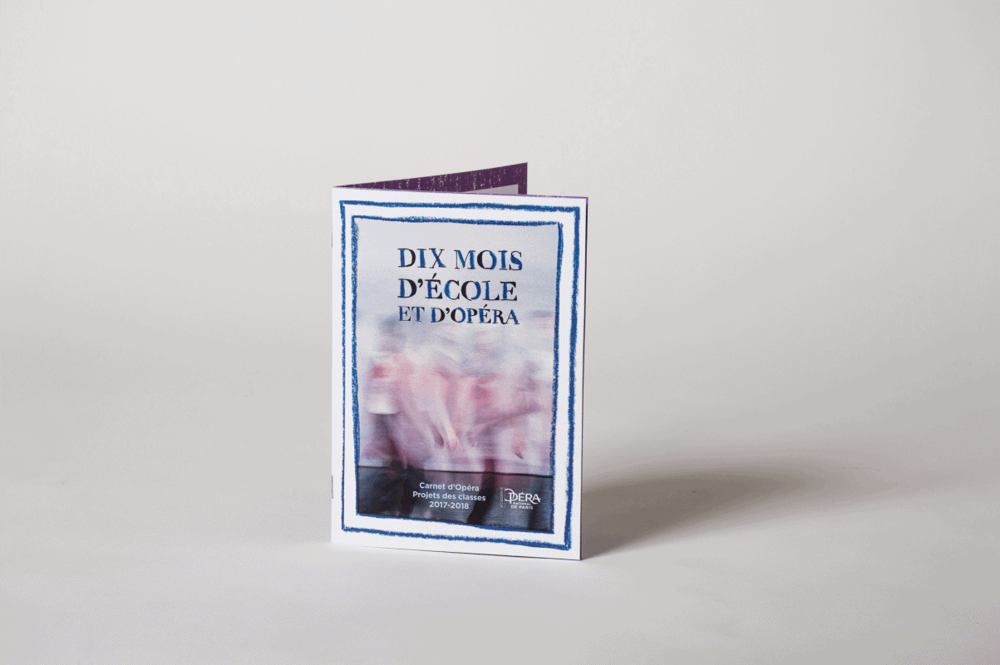
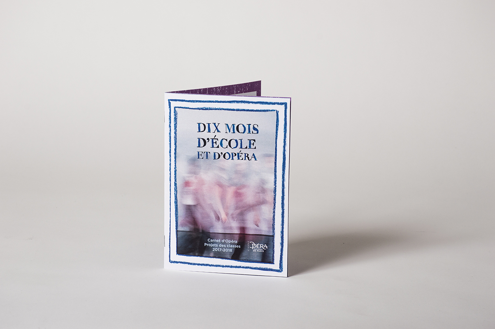
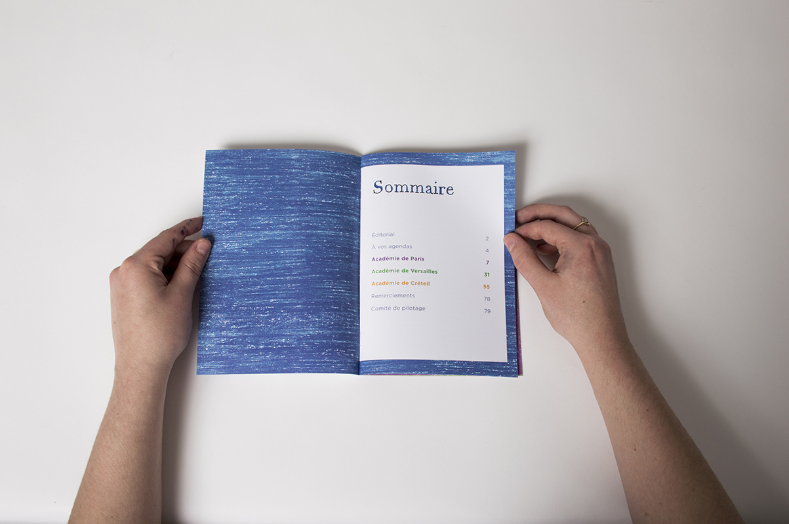
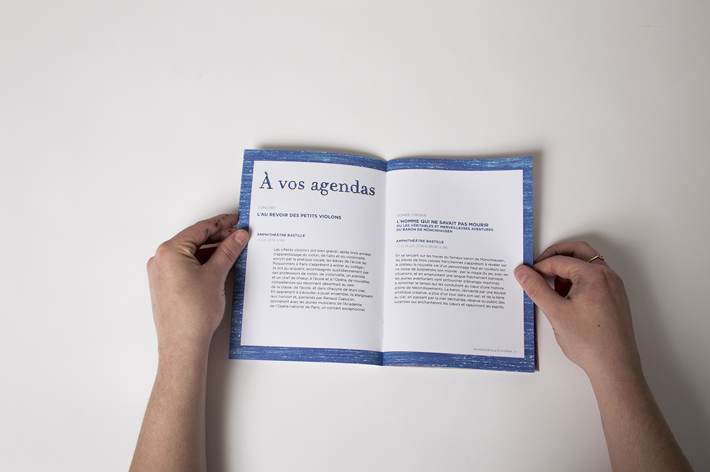
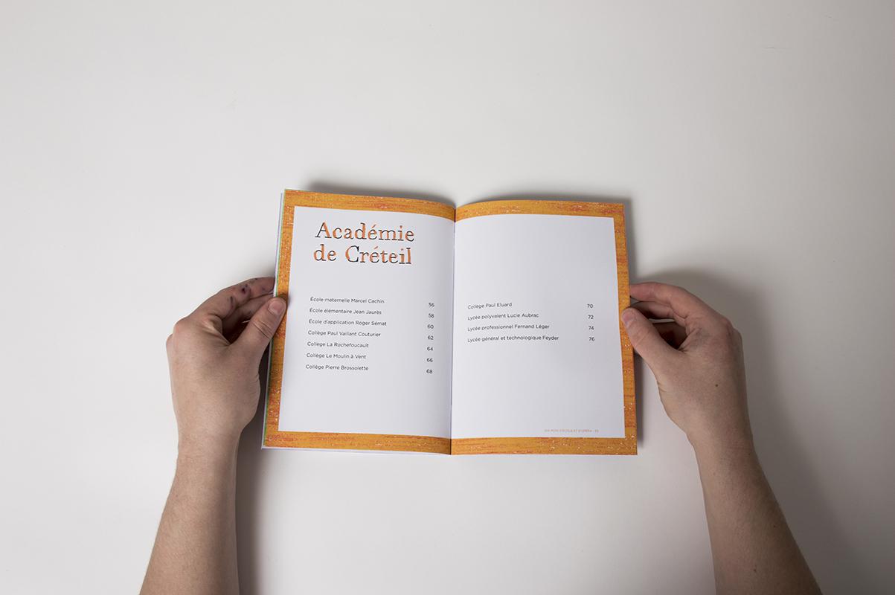
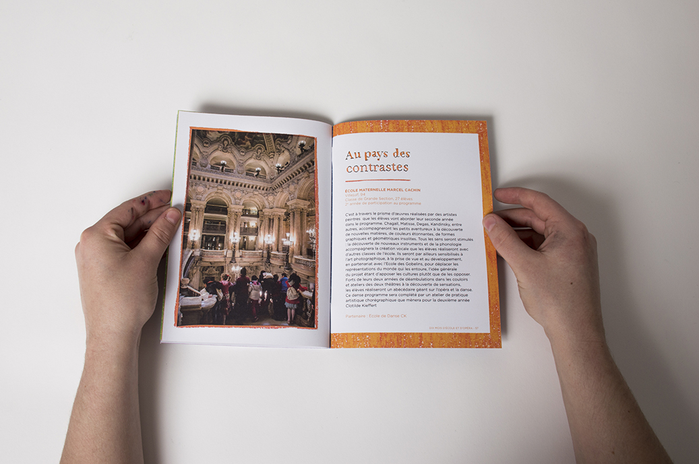
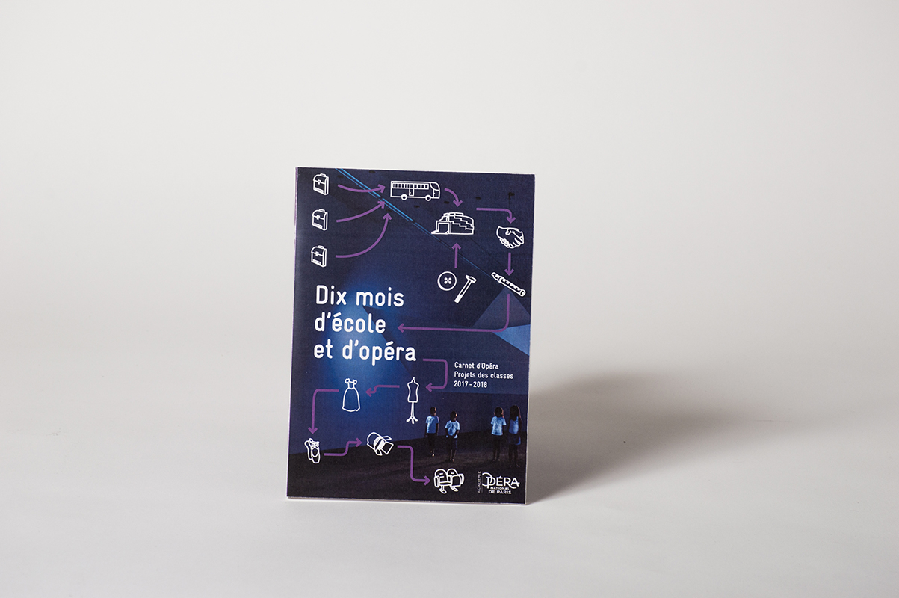
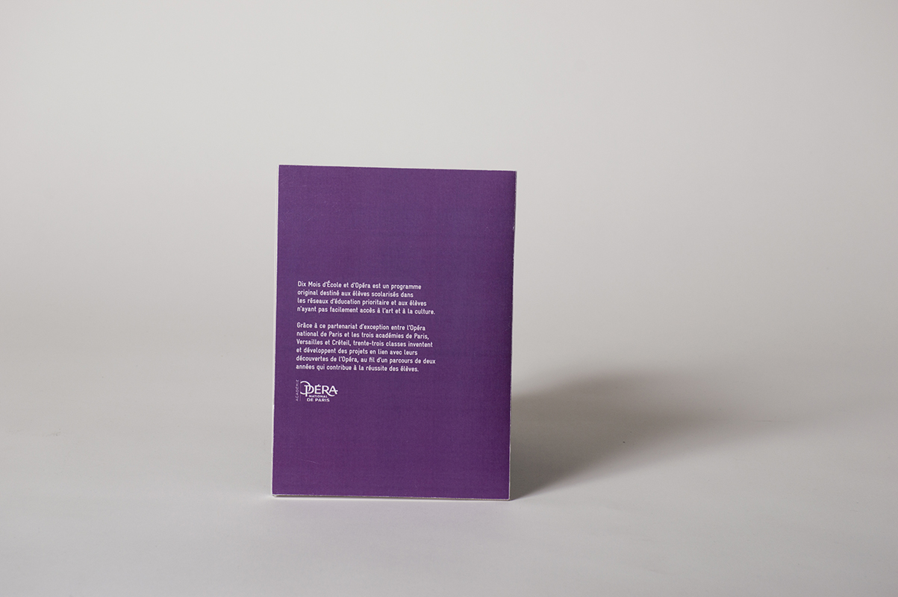

Première proposition retenue dans les finalistes
     Seconde proposition retenue pour un autre projet de l'Opéra
 Dix Mois d'École et d'Opéra
Refonte de la ligne graphique du Carnet Dix Mois d’école et d’Opéra pour la saison 2017-2018. Dans le cadre de ce partenariat, les élèves viennent découvrir les différents métiers et participer à des ateliers. À la fin de l’année ils montent un spectacle. Le livret recense les écoles participant avec leurs expériences et projets respectifs.
· Édition
· Format 14x19,5cm
· 2017